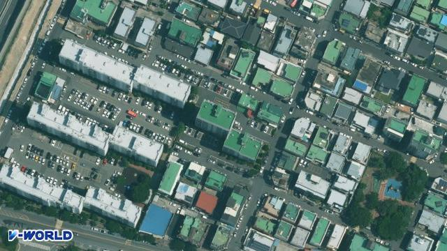

울산 중구 · 태화동
서린파크맨션 실거래가
1991년 준공 · 매매 66건 · 전세 7건 · 국토교통부 실거래가를 매일 새로 받아 정리합니다.

단지 정보
- 위치
- 울산 중구 태화동
- 준공
- 1991년
세대수 · 주차는 K-apt 에 자료가 없는 단지입니다(관리비 공개 대상이 아닌 작은 단지 등).
평형별 한눈에
| 평형 | 매매 | 가장 최근 | 최근 1년 평균 | 역대 최고 |
|---|---|---|---|---|
| 55평 141㎡ | 66건 | 4억 2,500만원 2026.04.15 · 14층 | 3억 8,867만원 6건 | 4억 5,000만원 2023.06.21 |
평은 공급면적 기준입니다 · 해제된 거래 제외 · 「최근 1년」은 가장 최근 거래에서 거꾸로 1년입니다. 층·동·수리 상태에 따라 값이 다릅니다.
최근 12개월 매매 신고 건수로 울산 · 중구 단지끼리 견준 순위입니다(해제 제외 · 날마다 새로).
매매 실거래 전체 66건 · 그래프와 표는 최근 66건
| 계약일 | 평형 | 층 | 거래 금액 |
|---|---|---|---|
| 2026.04.15 | 55평 141.97㎡ | 14층 | 4억 2,500만원 |
| 2026.03.13 | 55평 141.97㎡ | 4층 | 3억 7,000만원 |
| 2026.02.12 | 55평 141.97㎡ | 7층 | 3억 7,300만원 |
| 2025.09.15 | 55평 141.97㎡ | 7층 | 3억 8,000만원 |
| 2025.08.20 | 55평 141.97㎡ | 10층 | 4억 2,000만원 |
| 2025.05.15 | 55평 141.97㎡ | 2층 | 3억 6,400만원 |
| 2024.11.12 | 55평 141.97㎡ | 4층 | 3억 6,000만원직 |
| 2023.12.12 | 55평 141.97㎡ | 11층 | 4억 500만원 |
| 2023.06.21 | 55평 141.97㎡ | 14층 | 4억 5,000만원 |
| 2023.05.13 | 55평 141.97㎡ | 9층 | 3억 8,000만원 |
| 2023.04.01 | 55평 141.97㎡ | 7층 | 3억 8,200만원 |
| 2022.01.04 | 55평 141.97㎡ | 2층 | 3억 7,000만원 |
| 2021.10.04 | 55평 141.97㎡ | 4층 | 3억 7,700만원 |
| 2021.01.13 | 55평 141.97㎡ | 9층 | 3억원 |
| 2020.12.01 | 55평 141.97㎡ | 1층 | 2억 5,123만원 |
| 2020.10.31 | 55평 141.97㎡ | 4층 | 3억 3,300만원 |
| 2020.08.04 | 55평 141.97㎡ | 10층 | 3억 2,300만원 |
| 2020.08.02 | 55평 141.97㎡ | 13층 | 3억 1,000만원 |
| 2020.07.21 | 55평 141.97㎡ | 10층 | 3억 5,300만원 |
| 2020.06.30 | 55평 141.97㎡ | 11층 | 3억 2,000만원 |
점 하나가 거래 한 건 · 점선은 분기 평균 · 해제된 거래 제외 · 국토교통부 아파트 매매 실거래가. 층·동·수리 상태에 따라 값이 다릅니다.
전세 전체 7건
| 계약일 | 평형 | 층 | 보증금 |
|---|---|---|---|
| 2025.01.17 | 55평 | 10층 | 3억원신규 |
| 2024.10.17 | 55평 | 7층 | 3억원신규 |
| 2024.04.01 | 55평 | 5층 | 2억원신규 |
| 2023.05.26 | 55평 | 2층 | 2억 4,000만원신규 |
| 2021.06.07 | 55평 | 2층 | 2억 4,000만원신규 |
| 2021.02.06 | 55평 | 4층 | 2억 6,000만원 |
| 2020.10.14 | 55평 | 10층 | 2억 5,000만원 |
최근 12건 · 2020년 1월부터 모은 전세(월세 없는 계약) · 국토교통부 전월세 실거래가.
월세 전체 1건
| 계약일 | 평형 | 층 | 보증금 / 월세 |
|---|---|---|---|
| 2026.05.12 | 55평 | 7층 | 3,000만원 / 120만원신규 |
최근 12건 · 2020년 1월부터 모은 월세 · 국토교통부 전월세 실거래가. 보증금과 달마다 내는 월세를 같이 적었습니다.
이 단지 집을 내놓기 전에
- 같은 평형 · 비슷한 층의 거래를 고르세요. 위에서 평형을 고르면 그 평형 거래만 보입니다. 실거래는 이미 체결된 값이고, 지금 나와 있는 매물 가격은 팔고 싶은 값이라 서로 다릅니다.
- 값 차이를 설명할 자료를 챙기세요. 동 · 층 · 방향, 수리한 곳과 시기, 내부 사진이 있으면 상담이 빨라집니다.
- 언제 비워 줄 수 있는지 알려 주세요. 직접 살고 계신지 세를 주셨는지, 세를 주셨다면 보증금과 만기를 알려 주시면 됩니다.